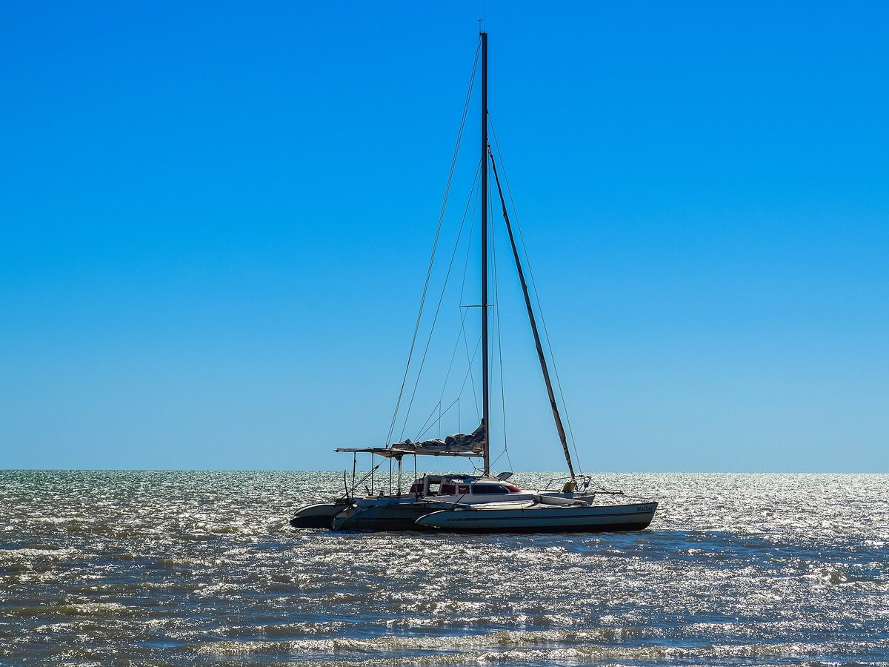
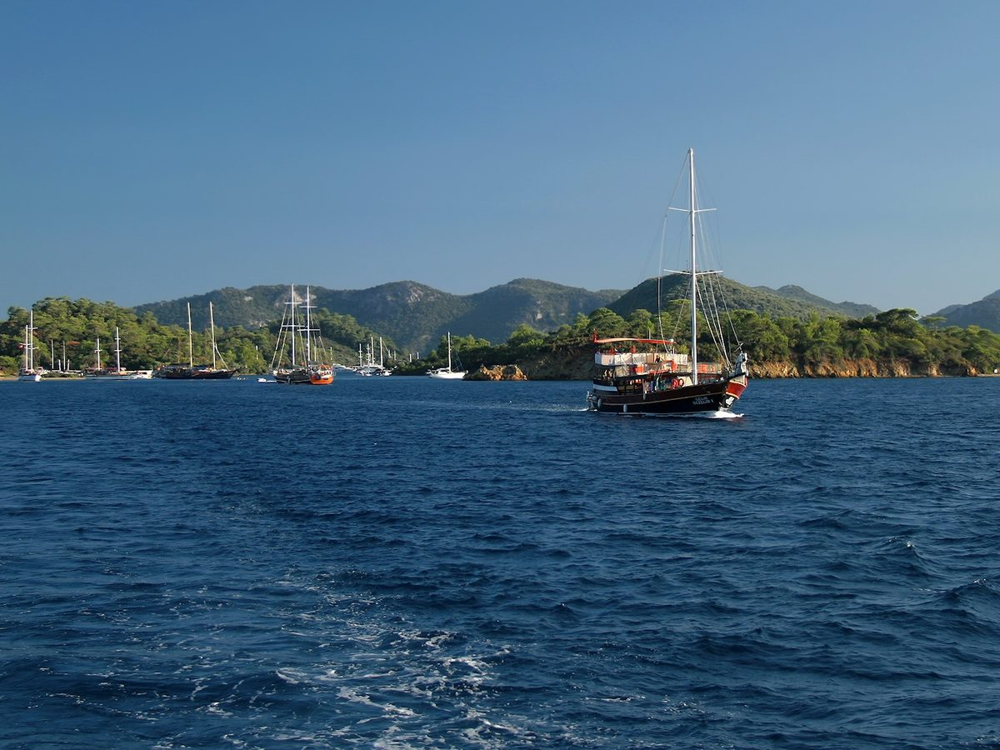

Motor yachts, gulets, sailboats and catamarans with a captain on the Bosphorus, by the hour, at sunset or at night. Choose your occasion and date; we open the yachts that are free on your day.
Tap a type to see the Istanbul yachts of that kind, then pick your date. Prices are the lowest summer rates across Türkiye’s main harbours.





Past the Dolmabahçe and Çırağan palaces to Ortaköy Mosque, from Bebek Bay to Rumeli Fortress; turn beneath the Fatih Sultan Mehmet Bridge and cruise back along the Asian shore’s waterfront mansions.
Motor yacht · speedboatOff the Maiden’s Tower, watch the sun set behind the domes and minarets of the old city, then sit down to dinner as the bridges light up.
Motor yacht · guletHead out into the Sea of Marmara and stop to swim in clear water around Büyükada, Heybeliada and Burgazada; return to the city along the Moda shore in the late afternoon.
Gulet · sailboat · catamaranIn Istanbul, yachts are mostly chartered by the hour; just pick your day and time.
What guests ask most before booking. Anything else? Write to us.
In summer, hourly charters across Türkiye’s main harbours start from about ₺1,721 per hour for gulets and sailboats, ₺1,999 for motor yachts, ₺2,499 for speedboats and ₺5,941 for catamarans. In Istanbul, November to March is low season, while special nights such as New Year’s Eve cost more. You see the exact price for your date before you book.
Every listing states the departure point. In Istanbul, yachts mostly leave from piers on the European shore such as Kuruçeşme, Bebek, Arnavutköy and Karaköy, and from Üsküdar and Kadıköy on the Asian shore.
Yes, yachts run on the Bosphorus all year. In winter choose one with an enclosed, heated saloon, and on days of strong north-easterly or south-westerly wind check the weather report before you go.
Yes, it is one of the most popular occasions on the Bosphorus. Extras such as decorations, cake, music or a photographer are offered on many listings; check what is included and choose a slot that catches the sunset.
Every listing states its guest capacity. Gulets and large motor yachts suit big birthday and company parties; a small motor yacht or a sailboat suits an evening for two.
ViraCheck does not charter yachts or operate tours; we help you find the right yacht and tour. Prices, availability, payment and cancellation are handled by the partner, and the partner may pay us a commission at no extra cost to you. Starting prices are the lowest hourly summer-season prices listed by Viravira across 12 main harbours in Türkiye (November 2026) and vary by season and date. Photos are illustrative; see photo credits.